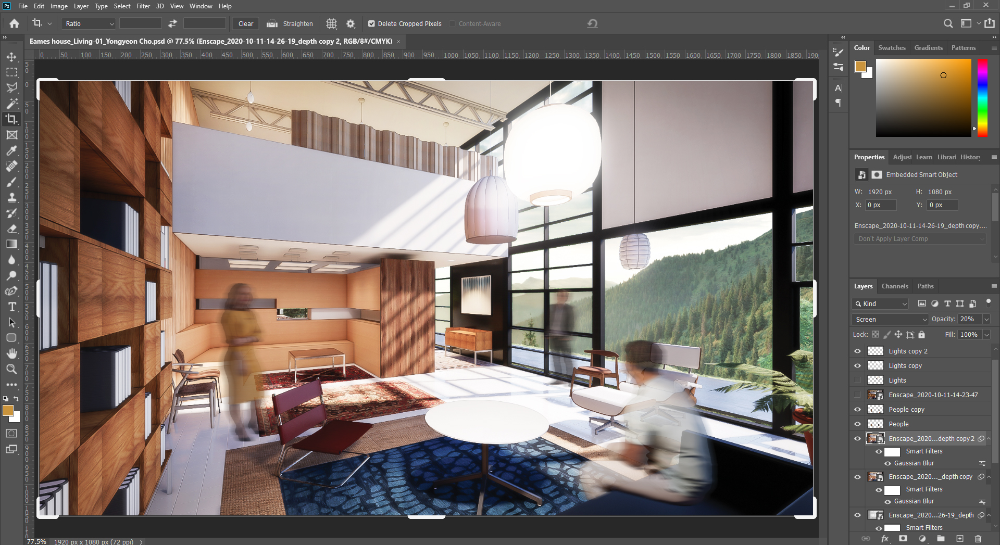
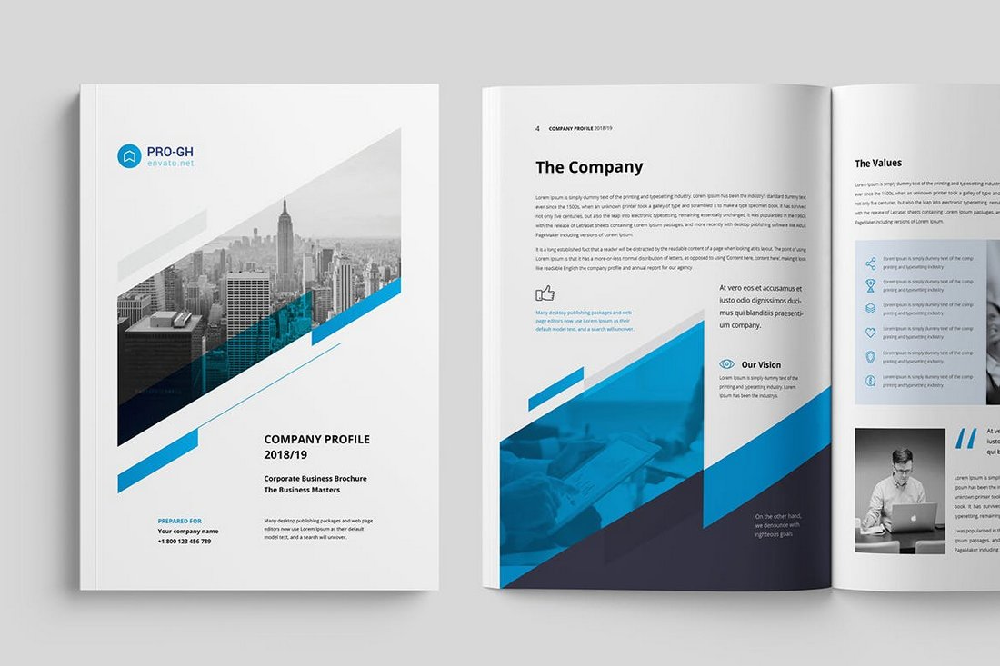

Why Photoshop is an Essential Skill for Architects
In the modern world of architecture, having a strong grasp of digital tools is crucial. Among these tools, Adobe Photoshop stands out as an indispensable asset for architects. Its versatility, powerful editing capabilities, and ability to bring ideas to life make it an essential skill for professionals in the field. Here’s why:
1. Enhancing Visualization and Presentation
Architects often need to communicate their ideas visually to clients, stakeholders, and colleagues. Photoshop allows architects to create stunning visualizations that effectively convey design concepts. From photo-realistic renderings to artistic representations, Photoshop provides the tools needed to enhance presentations, making them more appealing and understandable. Whether it’s about bringing a floor plan to life or adding finishing touches to a 3D model, the ability to produce high-quality visuals can make a substantial difference.
Architectural presentations are not just about showing how a building will look but also about conveying the feeling and experience of the space. Using Photoshop, architects can add context, atmosphere, and finer details that other software might miss. For instance, inserting realistic lighting effects, shadows, and reflections can transform a bland rendering into a compelling visual narrative that captures the imagination of clients and stakeholders.
2. Refining Design Concepts

Photoshop is a powerful tool for refining and polishing design concepts. Architects can use it to edit and tweak their designs, experiment with different color schemes, textures, and materials, and make quick adjustments without the need to redraw entire plans. This flexibility allows architects to iterate on their ideas efficiently, leading to more refined and innovative designs. Photoshop’s layer-based editing system is particularly beneficial for managing complex design elements, enabling architects to test various design options without permanently altering the original work.
Moreover, architects can blend different elements seamlessly, create collages of different materials, and even apply transformations that simulate physical properties. This helps in visualizing how different components interact within a space, ensuring that the final design is both aesthetically pleasing and functionally sound. For example, by overlaying textures and materials, an architect can assess how different finishes will look in different lighting conditions, providing a more comprehensive understanding of the final outcome.
3. Creating Compelling Marketing Materials

In addition to designing buildings, architects often need to market their services and attract new clients. Photoshop enables architects to create professional-looking brochures, portfolios, and promotional materials. High-quality visuals can make a significant difference in how a firm's work is perceived, helping to attract potential clients and win new projects. A well-crafted portfolio that showcases an architect’s best work can be the deciding factor in securing a project.
Photoshop’s advanced typography tools allow for the creation of visually appealing and informative text layouts, essential for crafting engaging marketing materials. Furthermore, the ability to manipulate images means architects can create before-and-after presentations, highlight key features of their designs, and tailor their marketing materials to specific audiences. This level of customization ensures that the marketing efforts resonate more effectively with potential clients, demonstrating both the aesthetic appeal and the technical prowess of the architect’s work.
4. Integrating with Other Design Tools
Photoshop seamlessly integrates with other design tools commonly used by architects, such as AutoCAD, SketchUp, and Revit. This integration allows architects to import and export files between different programs, ensuring a smooth workflow. By mastering Photoshop, architects can enhance their overall efficiency and productivity, making it easier to manage complex projects. For instance, detailed 2D drawings from AutoCAD can be imported into Photoshop for adding textures, colors, and annotations, thus enhancing the visual quality of technical drawings.
Additionally, Photoshop's ability to handle various file formats means architects can work with images and drawings from multiple sources, combining them into a cohesive presentation. This interoperability is crucial in collaborative environments where different team members might be using different software. Being proficient in Photoshop ensures that architects can adapt and integrate their work seamlessly with that of their colleagues, reducing friction and improving project coordination.
5. Customizing and Personalizing Designs
One of the key strengths of Photoshop is its ability to customize and personalize designs. Architects can use Photoshop to create unique textures, patterns, and visual elements that make their projects stand out. Whether it’s adding a personalized touch to a rendering or creating custom graphics for a presentation, Photoshop provides the creative freedom architects need to express their vision. Custom brushes and patterns in Photoshop can mimic real-world materials and finishes, adding a level of detail and realism that is hard to achieve with standard tools.
Moreover, Photoshop’s advanced selection and masking tools allow architects to isolate specific parts of their designs for detailed editing. This level of control means architects can fine-tune every aspect of their visual output, from the macro details of the building's exterior to the micro details of individual textures and finishes. This ability to personalize each element helps in creating a unique architectural identity that can set a firm apart in a competitive market.
Conclusion
In conclusion, mastering Photoshop is an essential skill for architects. It enhances visualization and presentation, refines design concepts, creates compelling marketing materials, integrates with other design tools, and allows for customization and personalization. By investing time in learning and mastering Photoshop, architects can significantly improve their ability to communicate their ideas, attract clients, and deliver exceptional projects. As the architectural industry continues to evolve, having strong digital skills will be key to staying competitive and achieving success. Embracing tools like Photoshop not only enriches the creative process but also opens up new possibilities for innovation and excellence in architectural design.